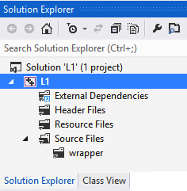
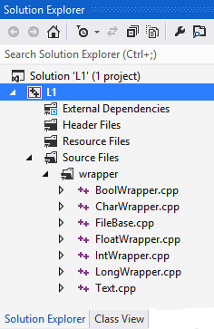
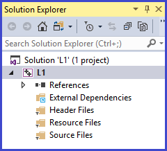

This file contains instructions (below) for following 3 steps:


Any time after a Project Solution has been created, you may add source code files.
|
 |
After a project has been created, you must add a filter subordinate to the "Source Files" folder. The filter folder will initially be empty, however, you will then add .cpp files for the Standard C++ Wrapper Classes (Boolean, Character, File, Integer, Long, and Text). You must do this only once for each project you create, and you must add these before trying to compile your project.
|
 |
|
 |
| Your project solution window should look similar to the screen shot to the right: |  |
Each time a new project is created, you must change its specific settings. You only need to do this once for each project you create. Failure to successfully change the settings will usually cause millions of compiler errors to be generated.
To change a project's settings, do the following:
| From Visual Studio Solution Explorer, with your project open, right click L1 (or LX, depending on the project - See the screen shot to the right) and from the context menu choose Properties, this will cause the "Property Pages" dialog to appear. |  |
While working in the Property Pages dialog make the following change You can copy and paste this path for Additional Include Directories:
|
|